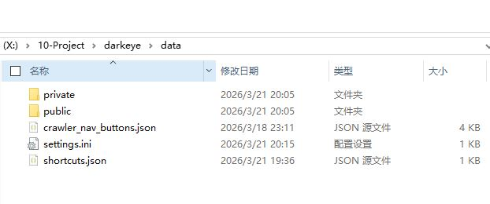

常见问题
版本更新¶
1.1.1之前¶
所有的数据库文件均在resources/public和resources/private这两个文件夹的下面。
在没有数据库迁移工具时只能手动复制主要的文件夹，resources/public和resources/private，把对应的文件夹移动到新版本的对应的位置就行了。
有迁移工具后，点击备份私库与公库，然后选择电脑上的一个位置，用新的版本点击还原后选择对应的meta.json和.db文件然后重启软件。现在暂时做不到无缝，总有问题。
还有就是settings.ini这个配置文件里面存了包括界面颜色，视频文件夹地址等信息，也一并移动过去。
现在绿色版只能是这样来版本迁移，后面如果有安装版应该是自动版本迁移。
迁移到1.1.2¶
1.1.2以前数据库文件均在resources/public和resources/private，之后需要把这两个文件移动到data下面，然后把settings.ini也移动到data文件夹下面。
data文件夹下面还有
- settings.ini 设置
- shortcuts.json用户自定义快捷键
- crawler_nav_buttons.jsonjson驱动的外链，用户可以自行编辑网站
迁移后这个文件夹应该长这样

自动更新¶
1.1.2后有自动更新机制，每周五晚上6点检查一次是否有新版本，有可以点击更新，目前下载速度很慢，还在检查问题，如果不行。就去github的release上下载最新的，然后点击使用本地安装包更新
手动下载包体更新¶
实际上更新就是把data文件夹整体换到新的软件本体里面就行了。
这个手动下载包体只是一种看起来更新优雅的方式，但是实际上并没有什么用。
为什么FC2等捕捉不完善？¶
因为软件主要为正规影片爬虫设计，测试连续爬60部正规的没问题，数据全部采集到，非正规的需要后面添加爬虫能力
翻译不准？¶
现在的翻译用的是javtxt上的机翻，如果上面没有用的是google翻译，确实不准，后面看情况用更好的翻译方案。
CPU占用率高？¶
因为力导向图计算时大于1000节点后默认并行计算吃满CPU，所以CPU占用率会升很高，不过没有关系，力导向图很快收敛就会停止计算。CPU又正常了。如果要支持1w+这个后期会改成纯GPU计算，现在只是CPU算加GPU显示。
现在在爬虫的时候是爬好一部就会更新，此时图谱会添加新节点，CPU占用率会短暂升高。
能否限制爬虫的信息源？¶
目前不能限制
爬虫爬虫的站点与优先级？¶
目前作品的站点为avdanyuwiki,javlib,javtxt,javdb，优先级也是如此
女优的站点为minnao-av
是否能播放本地视频？¶
可以的，链接完后就可以。
 先添加视频的路径。然后先把视频的信息爬取到软件中后。点击同步作品本地视频路径。完成链接后就可以点击光盘播放
先添加视频的路径。然后先把视频的信息爬取到软件中后。点击同步作品本地视频路径。完成链接后就可以点击光盘播放